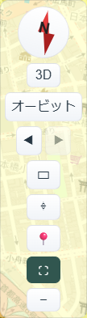

ナビゲーションツールバーは画面右下にあり、web/shared/nav-tools.js が全6エンジンへ同一 UI を提供します。コンパスボタン（北戻し＋ズーム）・+/-（既定1.25倍ズームで1.2倍〜2倍で変更可能）・3D（Cesium のみ。2D/3D 切替・他エンジンでは無効）・オービット（🔄 自旋: ダブルクリックで即時停止・ON/OFF または停止時に状態を保持）・オービット速度スライダー・表示履歴・矩形ズーム・地点座標・現在地・フルスクリーン・スクリーンショットを備えます。

エンジン切替時も各ボタンの状態・速度・拡大率・表示履歴を引き継ぎます（1-10 マルチエンジン）。
使い方
設定方法
.kasc の設定行はありません。+/- のズーム倍率・オービット速度はツールバー上で変更し、session-state（localStorage）に保持されてエンジン切替でも引き継がれます（1-10 マルチエンジン）。